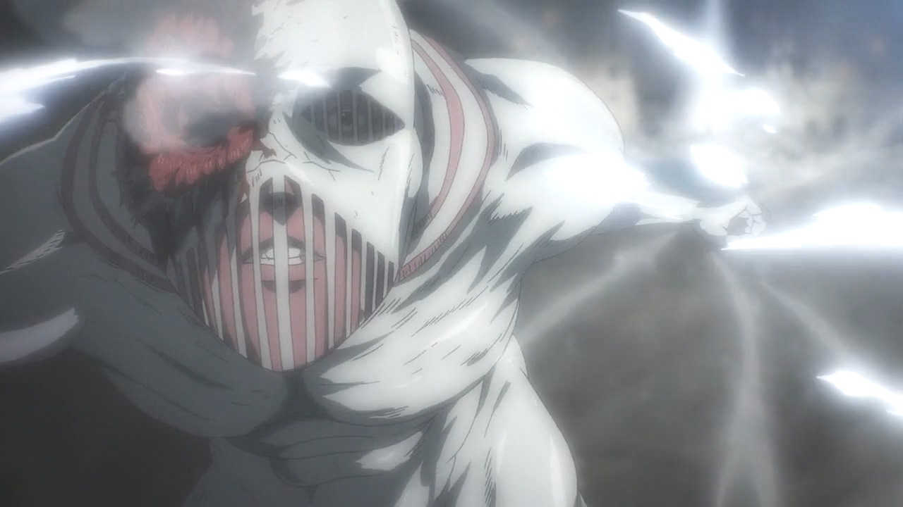

戰槌巨人
戰槌巨人（日語：戦鎚の巨人，英譯：War Hammer Titan）
身高為15公尺，能夠利用硬質化能力製作出骨頭類的物質，也可製造出硬質化的水晶物質，可任意操控形狀，可以製造出地刺以及戰錘，或是任何想像的到的物品（如十字弓、鞭子、長槍等），殺傷力非常強大，曾一擊就將硬質化之後的進擊巨人錘爛。具有語言能力，與其他八大巨人不同，本體不需在巨人的後頸，而是可以躲藏於安全地方並使用水晶化保護本體，再透過經由水晶外部，以神經連結的方式操作巨人。是九大巨人當中較擅長使用硬質化的巨人，但巨人之力消耗速度也較快。
由戴巴家族世代相傳，而854年時的持有者為菈菈·戴巴，之後被艾連利用顎巨人的尖牙破壞其水晶化防禦後吞噬，目前的持有者為艾連·葉卡。
曾經持有者：


